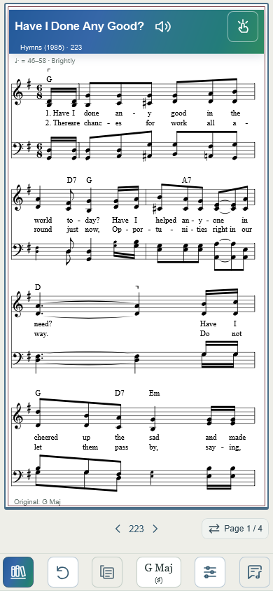
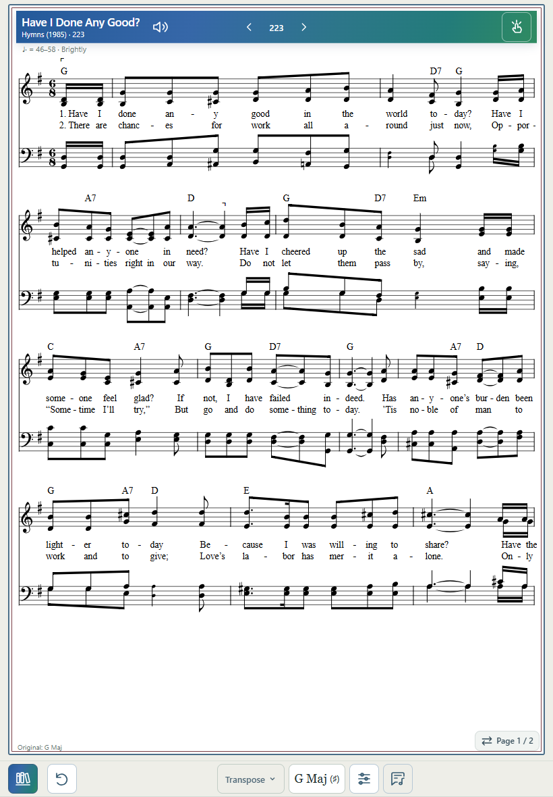
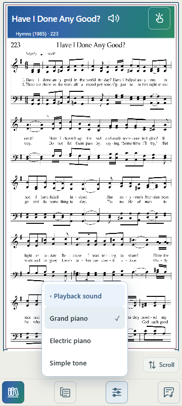
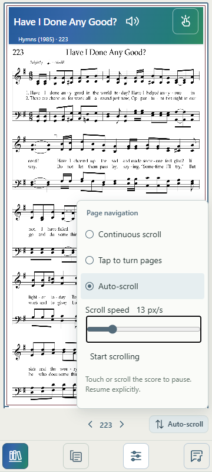

Baseline: 372c99c. Settings removed after relocating its useful controls. Song content, generated harmony, playback/metronome engines, transposition, Melody extraction, gestures and footer-viewport.js are unchanged.
At 600px and below, the header contains Title + speaker at left and Tap/help at right. The same Previous/current number/Next DOM node moves into the existing reserved status area; a 1fr auto 1fr grid centers it independently of the right-hand Page/Scroll chip. Chevron glyphs sit close to the intrinsic number label, while buttons retain 44px targets. Labels 5, 84, 223, 317, 1004, 1035, 20b and Song fit at 360px.
The one-row footer is Library, Reset, Score View, Key, Tools, Lyrics, with existing PDF availability rules. No Settings placeholder. Page-turn feedback occupies the otherwise empty left side of the status strip. Menus and the metronome panel render above the strip.
Above 600px, song navigation remains centered in the header. Page/Scroll positioning is unchanged.
| Former setting | New home and behavior |
|---|---|
| Navigation | Page/Scroll menu: Continuous, Tap to turn pages, Auto-scroll. Existing defaults and navigation-v2 preference retained. |
| Auto-scroll speed | Same menu, visible in Auto-scroll mode; original 1–60 range, persisted value, Start/Pause, and touch/wheel pause. Same engine. Slider keyboard arrows retained. |
| Playback sound | Tools → Playback sound → Grand piano / Electric piano / Simple tone. Immediate playback.setSound(), original music-transpose-playback-sound-v1 key. |
| Metronome | Tools → Metronome remains the single entry: Visual, Click, BPM, Tap tempo. Redundant fixed Side pulse/Standard click Settings fields removed; engine unchanged. |
| PDF trim | Tools → Trim blank margins, only in Original/PDF. Same checkbox, renderer and session key music-transpose-pdf-trim-v1. Keyboard Enter/Space supported. |
| Dark page | Existing Tools toggle and music-transpose-score-dark-v1 preference unchanged. |
Old Settings dialog, Apply/Cancel snapshot module and Settings-only listeners/styles removed. No preference migration or reset. Navigation availability now refreshes after a direct structured engraving, avoiding a hidden entry point once Settings is gone.
The existing 54px phone status reservation (44px control + 10px clearance) is reused; no second reservation is added. Existing actual footer measurement, safe-area and dynamic viewport obstruction accounting remain. Reduced visual viewport height 650px and simulated 34px safe clearance passed. All visible footer controls retain 44px targets; no horizontal overflow or status/music overlap was measured.
Tests use WebKit phone emulation and Chromium/Edge desktop emulation. They do not constitute physical Safari confirmation. Export/print/annotation entry points were checked; their unchanged generation engines were not rerun broadly.
app.js, index.html, navigation.js, score-tools.js, settings-help.js, styles.css, sw.js; playback-settings.js removed and playback-preferences.js added; four focused tests above and this report/assets. Known pre-existing diagnostic files were left untouched. Service-worker shell version is v227; score cache behavior is unchanged.




The commit containing this report records the change. Push, deployment and live asset verification are reported in the completion message. Physical iPhone confirmation remains required: Search → Score, all three score views, navigation preferences, sound selection and metronome interaction in normal Safari playing posture.